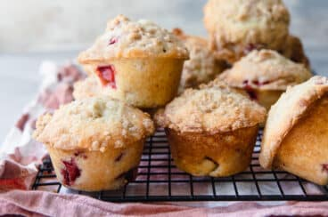

Back to Home
Raspberry and Cream Cheese Muffins

Description
These sweet and tangy raspberries have a surprise center full of vanilla infused cream cheese. Sprinkled with demerara sugar before baking for some added crunch. Wonderful at room temperature with a cup of tea or glass of cold milk
Ingredients
- 2 1/2 cups of self raising flour
- 1 cup of raw caster sugar
- 2 eggs
- 1/3 cup buttermilk
- 2 teaspoons vanilla extract
- 2/3 cup canola oil
- 250 g raspberries (fresh or frozen)
- 1 tablespoon demerara sugar
Cream Cheese Filling
- 125 g cream cheese, at room temperature
- 1 tablespoon sugar
- 1 teaspoon vanilla extract
Steps
- Preheat oven to 180 C
- Line a 12 hole muffin tin with muffin cases
- Add flour and sugar to a medium sized bowl and gently toss through raspberries
- In a smaller bowl whisk together the eggs, buttermilk, vanilla extract and oil.
- In a seperate bowl mix the cream cheese, sugar, and vanilla until well combined.
- Combine the egg mixture with the dry ingredients and mix quickly until just combined. Do not over mix or the muffins will end up with a tough texture.
- Fill each muffin case 1/3 full with the muffin mixture
- Add a teaspoon of the cream cheese mixture to each muffin case
- Top with the remaining muffin mixture
- Sprinkle the demerara sugar over the top of each muffin
- Bake for 20-25 minutes or until a skewer inserted into the center of a muffin comes out clean
- Allow to cool in the tin for 5 minutes before transferring to a wire rack to cool completely